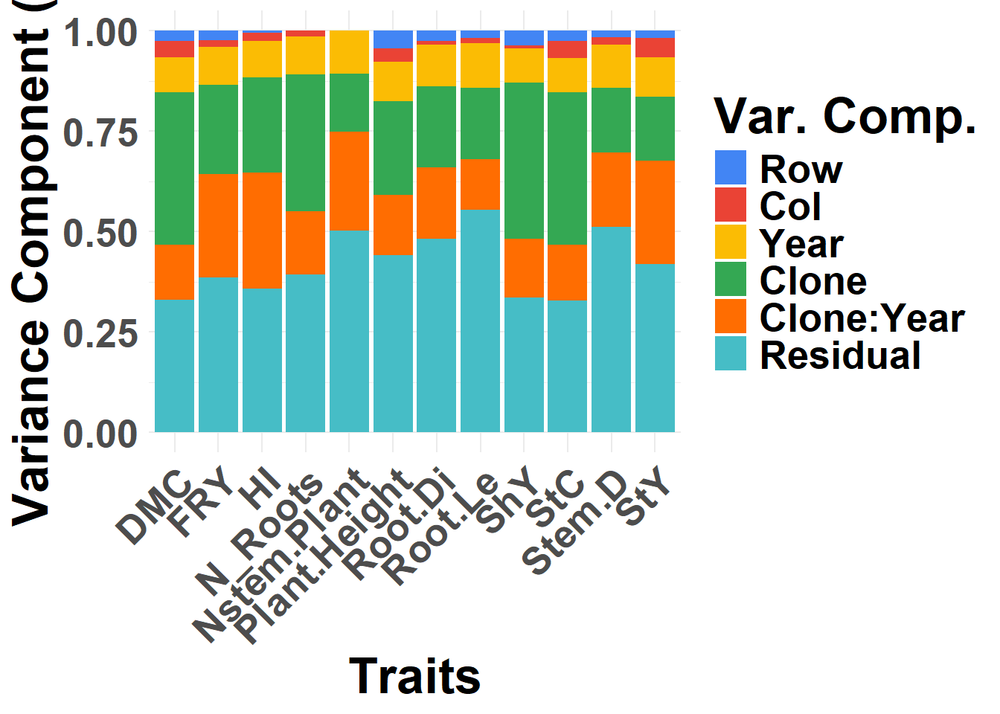
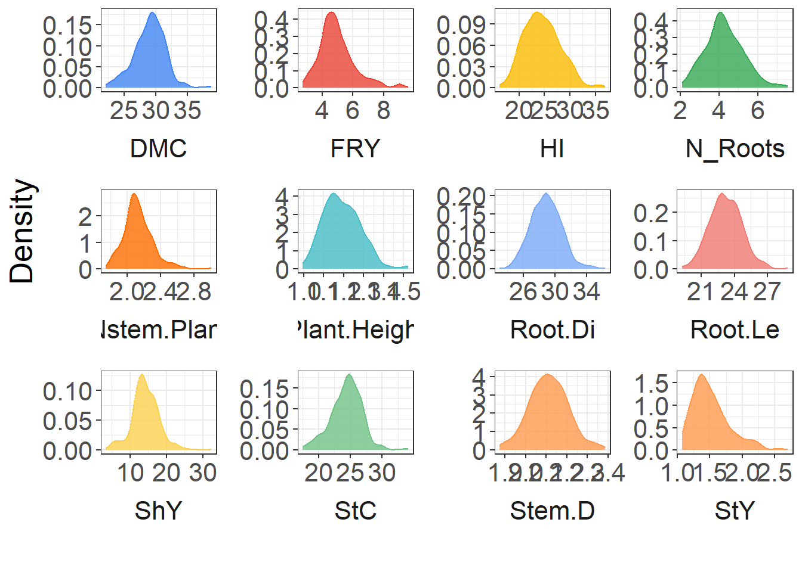
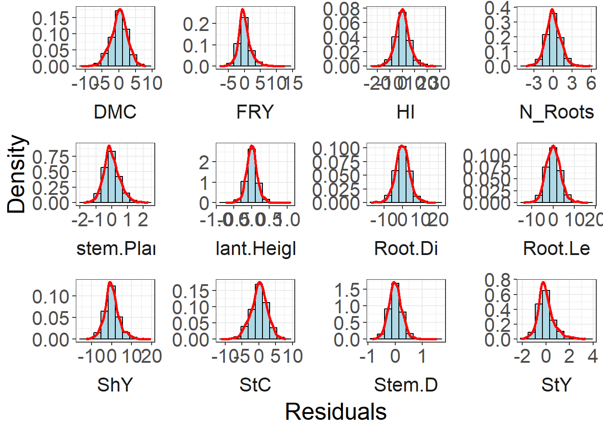
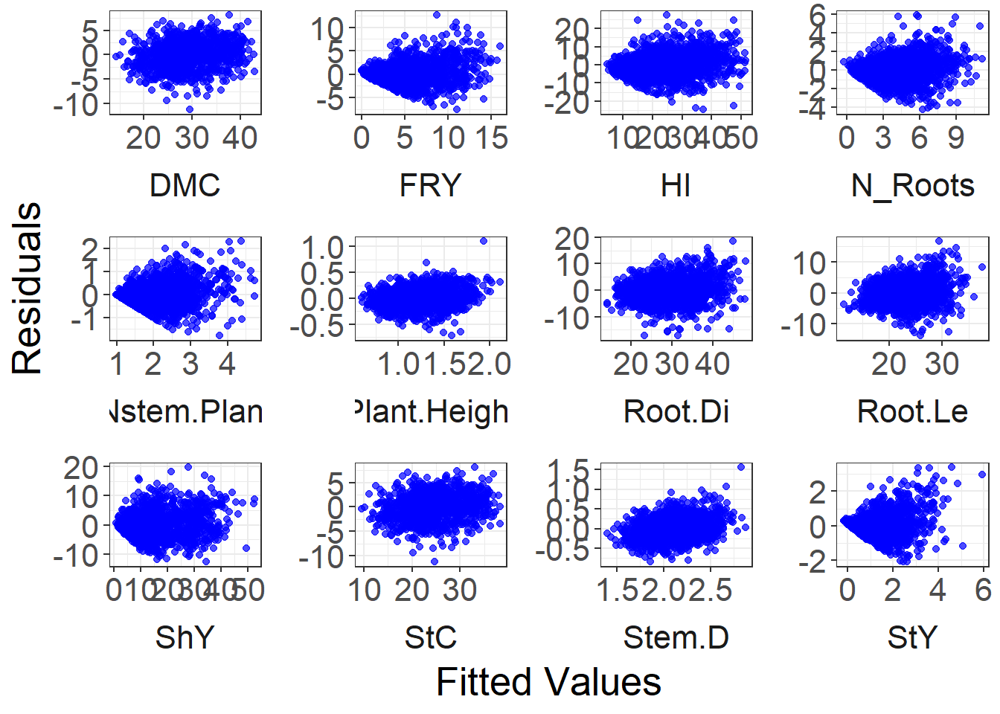

Last updated: 2025-01-15
Checks: 6 1
Knit directory:
Genomic-Selection-for-Drought-Tolerance-Using-Genome-Wide-SNPs-in-Casava/
This reproducible R Markdown analysis was created with workflowr (version 1.7.1). The Checks tab describes the reproducibility checks that were applied when the results were created. The Past versions tab lists the development history.
The R Markdown file has unstaged changes. To know which version of
the R Markdown file created these results, you’ll want to first commit
it to the Git repo. If you’re still working on the analysis, you can
ignore this warning. When you’re finished, you can run
wflow_publish to commit the R Markdown file and build the
HTML.
Great job! The global environment was empty. Objects defined in the global environment can affect the analysis in your R Markdown file in unknown ways. For reproduciblity it’s best to always run the code in an empty environment.
The command set.seed(20221020) was run prior to running
the code in the R Markdown file. Setting a seed ensures that any results
that rely on randomness, e.g. subsampling or permutations, are
reproducible.
Great job! Recording the operating system, R version, and package versions is critical for reproducibility.
Nice! There were no cached chunks for this analysis, so you can be confident that you successfully produced the results during this run.
Great job! Using relative paths to the files within your workflowr project makes it easier to run your code on other machines.
Great! You are using Git for version control. Tracking code development and connecting the code version to the results is critical for reproducibility.
The results in this page were generated with repository version c9c68fe. See the Past versions tab to see a history of the changes made to the R Markdown and HTML files.
Note that you need to be careful to ensure that all relevant files for
the analysis have been committed to Git prior to generating the results
(you can use wflow_publish or
wflow_git_commit). workflowr only checks the R Markdown
file, but you know if there are other scripts or data files that it
depends on. Below is the status of the Git repository when the results
were generated:
Ignored files:
Ignored: .Rhistory
Ignored: .Rproj.user/
Ignored: data/allchrAR08.txt
Untracked files:
Untracked: data/.gitignore
Untracked: data/Artigo/
Untracked: data/Phenotyping2.xlsx
Untracked: data/dados__temp_umi.csv
Untracked: output/BLUPS_par_mmer.Rdata
Untracked: output/BLUPS_row_col_random.csv
Untracked: output/H2_row_col_random.csv
Untracked: output/fitted_residual_data_row_col_random.csv
Untracked: output/mean_pheno.csv
Untracked: output/pheno_mean_sd.csv
Untracked: output/result_sommer_row_col_random.RDS
Untracked: output/semester_means.xlsx
Untracked: output/teste_LRT_row_col_random.csv
Untracked: output/varcomp_row_col_random.csv
Unstaged changes:
Modified: Genomic-Selection-for-Drought-Tolerance-Using-Genome-Wide-SNPs-in-Casava.Rproj
Modified: analysis/GWS.Rmd
Modified: analysis/mixed_models.Rmd
Modified: analysis/phenotype.Rmd
Modified: data/SNPs.rds
Modified: data/pheno_clean.csv
Deleted: output/BLUPS.csv
Deleted: output/BLUPS_par.Rdata
Deleted: output/media_pheno.csv
Deleted: output/varcomp.csv
Note that any generated files, e.g. HTML, png, CSS, etc., are not included in this status report because it is ok for generated content to have uncommitted changes.
These are the previous versions of the repository in which changes were
made to the R Markdown (analysis/mixed_models.Rmd) and HTML
(docs/mixed_models.html) files. If you’ve configured a
remote Git repository (see ?wflow_git_remote), click on the
hyperlinks in the table below to view the files as they were in that
past version.
| File | Version | Author | Date | Message |
|---|---|---|---|---|
| Rmd | db9b34f | WevertonGomesCosta | 2025-01-13 | update mixed_models.Rmd |
Load Libraries
library(kableExtra)
library(tidyverse)
library(data.table)
library(metan)
library(ggthemes)
library(GGally)
library(furrr)
theme_set(theme_bw())Import and prepare dataset:
Define a function to obtain the BLUPs and other model parameters:
BLUPS_par_mmer <- function(model, trait, teste_LRT) {
# log likelihood of the model, AIC, convergence T/F
modelfit <- summary(model)$logo
# number of groups for factors, could be used to compute DF
groups <- summary(model)$groups
# variance components
varcomp <- summary(model)$varcomp
# variance components
Vg <- model$sigma$Clone %>% as.vector()
Ve <- model$sigma$units %>% as.vector()
# Narrow-sense heritability
H2_narrow <- Vg / (Vg + Ve)
# Broad-sense heritability
Va <- model$sigma$`Ano:Clone` %>% as.vector()
Ve <- model$sigma$units %>% as.vector()
n.ano <- length(model$U$Ano[[trait]])
H2_Broad <- (Vg) / (Vg + (Va / n.ano) + (Ve / (2 * n.ano)))
# Extract the BLUPs and PEVs, compute Reliability (REL),
# de-regressed BLUPs and weights for downstream analysis
blups <- model$U$Clone %>%
unlist() %>%
tibble(Clone = names(.), BLUP = .) %>%
mutate(
Clone = gsub("Clone", "", Clone),
PEV = diag(as.matrix(model$PevU$Clone[[1]])),
# prediction error variance
REL = 1 - PEV / Vg,
# Reliability
drgBLUP = BLUP / REL,
# De-regressed BLUP
WT = (1 - H2_narrow) / ((0.1 + (1 - REL) / REL) * H2_narrow) # weight for downstream
)
# Combine all outputs into one object the function can return()
out <- list(
Trait = trait,
H2_Broad = H2_Broad,
H2_narrow = H2_narrow,
model = model,
modelfit = list(modelfit),
groups = list(groups),
blups = list(blups),
varcomp = list(varcomp),
teste_LRT = teste_LRT
)
return(out)
}
save(BLUPS_par_mmer, file = "output/BLUPS_par_mmer.Rdata")Convert trait columns to numeric and calculate the mean for each trait:
traits <- colnames(pheno)[6:ncol(pheno)]
pheno <- pheno %>%
mutate_at(traits, as.numeric)
mean_pheno <- pheno %>%
summarise(across(where(is.numeric), \(x) mean(x, na.rm = TRUE))) %>%
as.data.frame()
write.csv(mean_pheno, "output/mean_pheno.csv", row.names = FALSE)Set up parallel processing. Define and run multiple models to get the BLUPs: ATTENTION: This process is time-consuming.
# Função para rodar os modelos e coletar os resultados
run_models <- function(trait, pheno) {
# Selecionar apenas as colunas necessárias no início
data <- pheno %>%
select(1:5, all_of(trait)) %>%
na.omit() %>%
droplevels() %>%
as.data.table()
formula <- as.formula(paste(trait, "~ Ano:Bloco"))
formulas_random <- list(
as.formula("~ Clone + Ano + Ano:Clone + row + col"),
as.formula("~ Clone + Ano + row + col"),
as.formula("~ Clone + Ano:Clone + row + col"),
as.formula("~ Ano + Ano:Clone + row + col"),
as.formula("~ Clone + Ano + Ano:Clone + col"),
as.formula("~ Clone + Ano + Ano:Clone + row")
)
model <- function(formulas_random) {
sommer::mmer(
fixed = formula,
random = formulas_random,
rcov = ~ units,
data = data,
verbose = TRUE
)
}
models <-
map(formulas_random, model)
# Nomear os modelos
names(models) <-
c("Complete", "Clone:Year", "Year", "Clone", "row", "col")
# Calcular os testes ANOVA para todos os modelos
anova_tests <-
list(
sommer::anova.mmer(models$Complete, models$`Clone:Year`),
sommer::anova.mmer(models$Complete, models$Year),
sommer::anova.mmer(models$Complete, models$Clone),
sommer::anova.mmer(models$Complete, models$row),
sommer::anova.mmer(models$Complete, models$col)
)
teste_LRT <- do.call(bind_rows, anova_tests) %>%
distinct()
rownames(teste_LRT) <-
c("Complete", "Clone:Year", "Year", "Clone", "row", "col")
BLUPS_par_mmer(models$Complete, trait, teste_LRT)
}Run models in paralel for each trait
# Definir o plano para execução paralela
plan(multisession)
results <- future_map(traits, run_models, pheno = pheno)iteration LogLik wall cpu(sec) restrained
1 -394.699 13:44:3 142 0
2 -315.517 13:46:24 283 0
3 -290.671 13:48:41 420 0
4 -284.172 13:50:58 557 1
5 -283.035 13:53:17 696 1
6 -283.032 13:55:42 841 1
7 -283.032 13:58:5 984 1
iteration LogLik wall cpu(sec) restrained
1 -473.011 14:1:7 122 0
2 -353.738 14:3:10 245 0
3 -320.891 14:5:24 379 0
4 -313.841 14:7:30 505 0
5 -312.73 14:9:39 634 1
6 -312.632 14:11:47 762 1
7 -312.632 14:14:1 896 1
iteration LogLik wall cpu(sec) restrained
1 -394.699 14:16:44 143 0
2 -315.517 14:19:9 288 0
3 -290.671 14:21:27 426 0
4 -284.172 14:23:46 565 1
5 -283.035 14:26:4 703 1
6 -283.032 14:28:21 840 1
7 -283.032 14:30:42 981 1
iteration LogLik wall cpu(sec) restrained
1 -510.615 14:34:8 136 0
2 -363.489 14:36:25 273 0
3 -320.95 14:38:42 410 0
4 -312.27 14:40:58 546 1
5 -311.339 14:43:16 684 1
6 -311.335 14:45:32 820 1
7 -311.335 14:47:35 943 1
iteration LogLik wall cpu(sec) restrained
1 -371.879 14:50:35 123 0
2 -302.334 14:52:38 246 0
3 -285.188 14:54:43 371 0
4 -283.089 14:56:44 492 0
5 -283.034 14:58:44 612 0
6 -283.032 15:0:34 722 0
7 -283.032 15:2:21 829 0
iteration LogLik wall cpu(sec) restrained
1 -384.654 15:5:9 111 0
2 -315.719 15:7:2 224 0
3 -296.24 15:8:54 336 0
4 -290.797 15:10:44 446 1
5 -289.762 15:12:25 547 1
6 -289.761 15:14:6 648 1
Likelihood ratio test for mixed models
==============================================================
Df AIC BIC loLik Chisq ChiDf PrChisq
mod1 54 598.0635 687.4686 -283.0317
mod2 53 657.2635 746.6685 -312.6317 59.19997 1 1.42436244665181e-14 ***
==============================================================
Signif. codes: 0 '***' 0.001 '**' 0.01 '*' 0.05 '.' 0.1 ' ' 1Likelihood ratio test for mixed models
==============================================================
Df AIC BIC loLik Chisq ChiDf PrChisq
mod1 54 598.0635 687.4686 -283.0317
mod2 53 598.0635 687.4686 -283.0317 0 1 1
==============================================================
Signif. codes: 0 '***' 0.001 '**' 0.01 '*' 0.05 '.' 0.1 ' ' 1Likelihood ratio test for mixed models
==============================================================
Df AIC BIC loLik Chisq ChiDf PrChisq
mod1 54 598.0635 687.4686 -283.0317
mod2 53 654.6696 744.0747 -311.3348 56.60615 1 5.32450566461941e-14 ***
==============================================================
Signif. codes: 0 '***' 0.001 '**' 0.01 '*' 0.05 '.' 0.1 ' ' 1Likelihood ratio test for mixed models
==============================================================
Df AIC BIC loLik Chisq ChiDf PrChisq
mod1 54 598.0635 687.4686 -283.0317
mod2 53 598.0635 687.4686 -283.0317 0 1 0.99903
==============================================================
Signif. codes: 0 '***' 0.001 '**' 0.01 '*' 0.05 '.' 0.1 ' ' 1Likelihood ratio test for mixed models
==============================================================
Df AIC BIC loLik Chisq ChiDf PrChisq
mod1 54 598.0635 687.4686 -283.0317
mod2 53 611.5227 700.9277 -289.7613 13.45919 1 0.00024 ***
==============================================================
Signif. codes: 0 '***' 0.001 '**' 0.01 '*' 0.05 '.' 0.1 ' ' 1iteration LogLik wall cpu(sec) restrained
1 -535.378 15:16:29 96 0
2 -470.687 15:18:6 193 0
3 -450.476 15:19:43 290 0
4 -447.928 15:21:22 389 0
5 -447.795 15:22:57 484 0
6 -447.769 15:24:29 576 0
7 -447.762 15:25:50 657 0
8 -447.761 15:27:8 735 0
9 -447.76 15:28:27 814 0
iteration LogLik wall cpu(sec) restrained
1 -614.03 15:30:11 69 0
2 -534.113 15:31:27 145 0
3 -515.081 15:32:38 216 0
4 -512.744 15:33:54 292 0
5 -512.512 15:35:12 370 0
6 -512.449 15:36:25 443 0
7 -512.429 15:37:20 498 0
8 -512.422 15:38:7 545 0
9 -512.42 15:38:55 593 0
10 -512.419 15:39:43 641 0
iteration LogLik wall cpu(sec) restrained
1 -535.378 15:40:36 46 0
2 -470.687 15:41:24 94 0
3 -450.476 15:42:10 140 0
4 -447.928 15:42:56 186 0
5 -447.795 15:43:40 230 0
6 -447.769 15:44:26 276 0
7 -447.762 15:45:11 321 0
8 -447.761 15:45:55 365 0
9 -447.76 15:46:39 409 0
iteration LogLik wall cpu(sec) restrained
1 -641.454 15:47:38 40 0
2 -507.57 15:48:19 81 0
3 -469.431 15:48:59 121 0
4 -465.32 15:49:41 163 0
5 -465.161 15:50:23 205 0
6 -465.13 15:51:3 245 0
7 -465.122 15:51:45 287 0
8 -465.12 15:52:30 332 0
9 -465.119 15:53:14 376 0
iteration LogLik wall cpu(sec) restrained
1 -529.4 15:54:15 42 0
2 -470.667 15:54:55 82 0
3 -453.266 15:55:36 123 0
4 -451.512 15:56:20 167 0
5 -451.499 15:57:1 208 0
6 -451.498 15:57:41 248 0
iteration LogLik wall cpu(sec) restrained
1 -528.449 15:58:42 41 0
2 -475.26 15:59:22 81 0
3 -460.44 16:0:6 125 0
4 -458.458 16:0:47 166 0
5 -458.31 16:1:30 209 0
6 -458.279 16:2:15 254 0
7 -458.271 16:2:57 296 0
8 -458.269 16:3:37 336 0
9 -458.268 16:4:17 376 0
Likelihood ratio test for mixed models
==============================================================
Df AIC BIC loLik Chisq ChiDf PrChisq
mod1 54 927.5204 1016.820 -447.7602
mod2 53 1056.8375 1146.137 -512.4187 129.31702 1 5.7807213084901e-30 ***
==============================================================
Signif. codes: 0 '***' 0.001 '**' 0.01 '*' 0.05 '.' 0.1 ' ' 1Likelihood ratio test for mixed models
==============================================================
Df AIC BIC loLik Chisq ChiDf PrChisq
mod1 54 927.5204 1016.82 -447.7602
mod2 53 927.5204 1016.82 -447.7602 0 1 1
==============================================================
Signif. codes: 0 '***' 0.001 '**' 0.01 '*' 0.05 '.' 0.1 ' ' 1Likelihood ratio test for mixed models
==============================================================
Df AIC BIC loLik Chisq ChiDf PrChisq
mod1 54 927.5204 1016.820 -447.7602
mod2 53 962.2390 1051.538 -465.1195 34.71854 1 3.80986092686306e-09 ***
==============================================================
Signif. codes: 0 '***' 0.001 '**' 0.01 '*' 0.05 '.' 0.1 ' ' 1Likelihood ratio test for mixed models
==============================================================
Df AIC BIC loLik Chisq ChiDf PrChisq
mod1 54 927.5204 1016.820 -447.7602
mod2 53 934.9968 1024.296 -451.4984 7.47637 1 0.00625 **
==============================================================
Signif. codes: 0 '***' 0.001 '**' 0.01 '*' 0.05 '.' 0.1 ' ' 1Likelihood ratio test for mixed models
==============================================================
Df AIC BIC loLik Chisq ChiDf PrChisq
mod1 54 927.5204 1016.820 -447.7602
mod2 53 948.5361 1037.835 -458.2681 21.01567 1 4.55542957069547e-06 ***
==============================================================
Signif. codes: 0 '***' 0.001 '**' 0.01 '*' 0.05 '.' 0.1 ' ' 1iteration LogLik wall cpu(sec) restrained
1 15.6647 13:44:28 166 0
2 117.749 13:47:16 334 0
3 148.727 13:50:0 498 0
4 152.611 13:52:44 662 0
5 152.749 13:55:34 832 0
6 152.764 13:58:21 999 0
7 152.767 14:1:5 1163 0
8 152.767 14:3:56 1334 0
iteration LogLik wall cpu(sec) restrained
1 -80.7959 14:7:44 150 0
2 69.6931 14:10:14 300 0
3 116.347 14:12:48 454 0
4 121.918 14:15:33 619 0
5 122.156 14:18:29 795 0
6 122.185 14:21:11 957 0
7 122.19 14:23:52 1118 0
8 122.192 14:26:34 1280 0
9 122.192 14:29:13 1439 0
iteration LogLik wall cpu(sec) restrained
1 15.6647 14:32:23 166 0
2 117.749 14:35:3 326 0
3 148.727 14:37:41 484 0
4 152.611 14:40:26 649 0
5 152.749 14:43:8 811 0
6 152.764 14:45:45 968 0
7 152.767 14:48:11 1114 0
8 152.767 14:50:36 1259 0
iteration LogLik wall cpu(sec) restrained
1 -106.064 14:54:8 143 0
2 72.0855 14:56:32 287 0
3 122.696 14:58:53 428 0
4 128.271 15:1:2 557 0
5 128.41 15:3:11 686 0
6 128.431 15:5:21 816 0
7 128.435 15:7:30 945 0
8 128.436 15:9:43 1078 0
iteration LogLik wall cpu(sec) restrained
1 11.8319 15:12:40 118 0
2 108.707 15:14:39 237 0
3 137.44 15:16:19 337 0
4 140.756 15:17:59 437 0
5 140.832 15:19:40 538 0
6 140.835 15:21:23 641 0
7 140.835 15:23:2 740 0
iteration LogLik wall cpu(sec) restrained
1 35.4468 15:25:21 93 0
2 123.571 15:26:42 174 0
3 145.252 15:28:7 259 0
4 147.553 15:29:28 340 0
5 147.675 15:30:59 431 0
6 147.691 15:32:24 516 0
7 147.695 15:33:54 606 0
8 147.695 15:35:26 698 0
Likelihood ratio test for mixed models
==============================================================
Df AIC BIC loLik Chisq ChiDf PrChisq
mod1 54 -273.5348 -183.2544 152.7674
mod2 53 -212.3835 -122.1031 122.1918 61.15126 1 5.28539028651048e-15 ***
==============================================================
Signif. codes: 0 '***' 0.001 '**' 0.01 '*' 0.05 '.' 0.1 ' ' 1Likelihood ratio test for mixed models
==============================================================
Df AIC BIC loLik Chisq ChiDf PrChisq
mod1 54 -273.5348 -183.2544 152.7674
mod2 53 -273.5348 -183.2544 152.7674 0 1 1
==============================================================
Signif. codes: 0 '***' 0.001 '**' 0.01 '*' 0.05 '.' 0.1 ' ' 1Likelihood ratio test for mixed models
==============================================================
Df AIC BIC loLik Chisq ChiDf PrChisq
mod1 54 -273.5348 -183.2544 152.7674
mod2 53 -224.8719 -134.5916 128.4360 48.66283 1 3.03973677890998e-12 ***
==============================================================
Signif. codes: 0 '***' 0.001 '**' 0.01 '*' 0.05 '.' 0.1 ' ' 1Likelihood ratio test for mixed models
==============================================================
Df AIC BIC loLik Chisq ChiDf PrChisq
mod1 54 -273.5348 -183.2544 152.7674
mod2 53 -249.6705 -159.3901 140.8352 23.86428 1 1.03372377017493e-06 ***
==============================================================
Signif. codes: 0 '***' 0.001 '**' 0.01 '*' 0.05 '.' 0.1 ' ' 1Likelihood ratio test for mixed models
==============================================================
Df AIC BIC loLik Chisq ChiDf PrChisq
mod1 54 -273.5348 -183.2544 152.7674
mod2 53 -263.3904 -173.1100 147.6952 10.14439 1 0.00145 **
==============================================================
Signif. codes: 0 '***' 0.001 '**' 0.01 '*' 0.05 '.' 0.1 ' ' 1iteration LogLik wall cpu(sec) restrained
1 -162.21 13:42:20 38 0
2 -104.964 13:43:6 84 0
3 -88.985 13:43:51 129 0
4 -86.9112 13:44:32 170 0
5 -86.8145 13:45:15 213 0
6 -86.808 13:45:59 257 0
7 -86.8074 13:46:41 299 0
iteration LogLik wall cpu(sec) restrained
1 -219.749 13:47:33 36 0
2 -130.556 13:48:9 72 0
3 -103.442 13:48:46 109 0
4 -100.333 13:49:23 146 0
5 -100.263 13:50:1 184 0
6 -100.261 13:50:36 219 0
7 -100.261 13:51:13 256 0
iteration LogLik wall cpu(sec) restrained
1 -162.21 13:51:55 37 0
2 -104.964 13:52:33 75 0
3 -88.985 13:53:10 112 0
4 -86.9112 13:53:46 148 0
5 -86.8145 13:54:25 187 0
6 -86.808 13:55:5 227 0
7 -86.8074 13:55:42 264 0
iteration LogLik wall cpu(sec) restrained
1 -230.556 13:56:34 38 0
2 -128.304 13:57:13 77 0
3 -100.681 13:57:52 116 0
4 -97.7205 13:58:28 152 0
5 -97.636 13:59:3 187 0
6 -97.6332 13:59:40 224 0
7 -97.6331 14:0:19 263 0
iteration LogLik wall cpu(sec) restrained
1 -165.592 14:1:9 35 0
2 -113.859 14:1:46 72 0
3 -100.718 14:2:24 110 0
4 -99.4108 14:3:3 149 0
5 -99.3575 14:3:43 189 0
6 -99.3527 14:4:24 230 0
7 -99.3523 14:5:8 274 0
iteration LogLik wall cpu(sec) restrained
1 -168.972 14:6:4 40 0
2 -119.657 14:6:44 80 0
3 -105.653 14:7:23 119 0
4 -103.829 14:8:0 156 0
5 -103.751 14:8:41 197 0
6 -103.747 14:9:21 237 0
7 -103.746 14:9:58 274 0
Likelihood ratio test for mixed models
==============================================================
Df AIC BIC loLik Chisq ChiDf PrChisq
mod1 42 197.6149 259.9120 -86.80744
mod2 41 224.5228 286.8199 -100.26138 26.90789 1 2.13386444379736e-07 ***
==============================================================
Signif. codes: 0 '***' 0.001 '**' 0.01 '*' 0.05 '.' 0.1 ' ' 1Likelihood ratio test for mixed models
==============================================================
Df AIC BIC loLik Chisq ChiDf PrChisq
mod1 42 197.6149 259.912 -86.80744
mod2 41 197.6149 259.912 -86.80744 0 1 1
==============================================================
Signif. codes: 0 '***' 0.001 '**' 0.01 '*' 0.05 '.' 0.1 ' ' 1Likelihood ratio test for mixed models
==============================================================
Df AIC BIC loLik Chisq ChiDf PrChisq
mod1 42 197.6149 259.9120 -86.80744
mod2 41 219.2662 281.5633 -97.63308 21.65128 1 3.26990929235941e-06 ***
==============================================================
Signif. codes: 0 '***' 0.001 '**' 0.01 '*' 0.05 '.' 0.1 ' ' 1Likelihood ratio test for mixed models
==============================================================
Df AIC BIC loLik Chisq ChiDf PrChisq
mod1 42 197.6149 259.9120 -86.80744
mod2 41 222.7045 285.0017 -99.35225 25.08963 1 5.47263978461532e-07 ***
==============================================================
Signif. codes: 0 '***' 0.001 '**' 0.01 '*' 0.05 '.' 0.1 ' ' 1Likelihood ratio test for mixed models
==============================================================
Df AIC BIC loLik Chisq ChiDf PrChisq
mod1 42 197.6149 259.9120 -86.80744
mod2 41 231.4926 293.7898 -103.74630 33.87773 1 5.868655151605e-09 ***
==============================================================
Signif. codes: 0 '***' 0.001 '**' 0.01 '*' 0.05 '.' 0.1 ' ' 1iteration LogLik wall cpu(sec) restrained
1 -461.848 14:10:59 45 0
2 -435.948 14:11:45 91 0
3 -427.273 14:12:31 137 0
4 -425.817 14:13:18 184 0
5 -425.693 14:14:5 231 0
6 -425.676 14:14:54 280 0
7 -425.674 14:15:44 330 0
8 -425.673 14:16:36 382 0
iteration LogLik wall cpu(sec) restrained
1 -504.675 14:17:41 45 0
2 -470.459 14:18:26 90 0
3 -461.911 14:19:6 130 0
4 -460.668 14:19:49 173 0
5 -460.557 14:20:31 215 0
6 -460.543 14:21:9 253 0
7 -460.542 14:21:50 294 0
8 -460.541 14:22:33 337 0
iteration LogLik wall cpu(sec) restrained
1 -461.848 14:23:21 41 0
2 -435.948 14:24:1 81 0
3 -427.273 14:24:40 120 0
4 -425.817 14:25:24 164 0
5 -425.693 14:26:5 205 0
6 -425.676 14:26:44 244 0
7 -425.674 14:27:25 285 0
8 -425.673 14:28:8 328 0
iteration LogLik wall cpu(sec) restrained
1 -512.102 14:29:1 36 0
2 -451.936 14:29:45 80 0
3 -434.318 14:30:31 126 0
4 -431.948 14:31:12 167 0
5 -431.788 14:31:52 207 0
6 -431.767 14:32:34 249 0
7 -431.764 14:33:15 290 0
8 -431.763 14:33:57 332 0
iteration LogLik wall cpu(sec) restrained
1 -456.402 14:34:52 39 0
2 -434.7 14:35:34 81 0
3 -428.895 14:36:15 122 0
4 -428.399 14:36:55 162 0
5 -428.393 14:37:34 201 0
6 -428.393 14:38:17 244 0
iteration LogLik wall cpu(sec) restrained
1 -477.151 14:39:20 43 0
2 -456.703 14:40:1 84 0
3 -449.048 14:40:43 126 0
4 -447.556 14:41:23 166 0
5 -447.425 14:42:5 208 0
6 -447.407 14:42:47 250 0
7 -447.405 14:43:30 293 0
8 -447.404 14:44:11 334 0
Likelihood ratio test for mixed models
==============================================================
Df AIC BIC loLik Chisq ChiDf PrChisq
mod1 42 875.3465 937.5529 -425.6732
mod2 41 945.0826 1007.2891 -460.5413 69.73615 1 6.77920499480788e-17 ***
==============================================================
Signif. codes: 0 '***' 0.001 '**' 0.01 '*' 0.05 '.' 0.1 ' ' 1Likelihood ratio test for mixed models
==============================================================
Df AIC BIC loLik Chisq ChiDf PrChisq
mod1 42 875.3465 937.5529 -425.6732
mod2 41 875.3465 937.5529 -425.6732 0 1 1
==============================================================
Signif. codes: 0 '***' 0.001 '**' 0.01 '*' 0.05 '.' 0.1 ' ' 1Likelihood ratio test for mixed models
==============================================================
Df AIC BIC loLik Chisq ChiDf PrChisq
mod1 42 875.3465 937.5529 -425.6732
mod2 41 887.5270 949.7334 -431.7635 12.18049 1 0.00048 ***
==============================================================
Signif. codes: 0 '***' 0.001 '**' 0.01 '*' 0.05 '.' 0.1 ' ' 1Likelihood ratio test for mixed models
==============================================================
Df AIC BIC loLik Chisq ChiDf PrChisq
mod1 42 875.3465 937.5529 -425.6732
mod2 41 880.7859 942.9924 -428.3930 5.43948 1 0.01969 *
==============================================================
Signif. codes: 0 '***' 0.001 '**' 0.01 '*' 0.05 '.' 0.1 ' ' 1Likelihood ratio test for mixed models
==============================================================
Df AIC BIC loLik Chisq ChiDf PrChisq
mod1 42 875.3465 937.5529 -425.6732
mod2 41 918.8085 981.0149 -447.4042 43.46198 1 4.32276349277575e-11 ***
==============================================================
Signif. codes: 0 '***' 0.001 '**' 0.01 '*' 0.05 '.' 0.1 ' ' 1iteration LogLik wall cpu(sec) restrained
1 -289.567 13:44:28 165 0
2 -261.843 13:47:13 330 0
3 -252.699 13:49:55 492 0
4 -251.439 13:52:36 653 0
5 -251.401 13:55:23 820 0
6 -251.4 13:58:8 985 0
7 -251.4 14:0:51 1148 0
iteration LogLik wall cpu(sec) restrained
1 -345.015 14:4:27 149 0
2 -291.708 14:7:3 305 0
3 -275.052 14:9:31 453 0
4 -272.831 14:12:0 602 0
5 -272.769 14:14:38 760 0
6 -272.767 14:17:23 925 0
7 -272.767 14:20:9 1091 0
iteration LogLik wall cpu(sec) restrained
1 -289.567 14:23:12 161 0
2 -261.843 14:25:52 321 0
3 -252.699 14:28:32 481 0
4 -251.439 14:31:14 643 0
5 -251.401 14:33:54 803 0
6 -251.4 14:36:31 960 0
7 -251.4 14:39:13 1122 0
iteration LogLik wall cpu(sec) restrained
1 -359.488 14:43:11 162 0
2 -289.428 14:45:46 317 0
3 -268.502 14:48:9 460 0
4 -265.908 14:50:33 604 0
5 -265.836 14:52:56 747 0
6 -265.833 14:55:21 892 0
7 -265.833 14:57:42 1033 0
iteration LogLik wall cpu(sec) restrained
1 -304.458 15:0:51 128 0
2 -280.074 15:2:57 254 0
3 -272.389 15:5:5 382 0
4 -271.408 15:7:15 512 0
5 -271.387 15:9:23 640 0
6 -271.387 15:11:25 762 0
iteration LogLik wall cpu(sec) restrained
1 -299.241 15:14:22 118 0
2 -277.023 15:16:2 218 0
3 -270.418 15:17:39 315 0
4 -269.617 15:19:21 417 0
5 -269.594 15:20:59 515 0
6 -269.593 15:22:39 615 0
7 -269.593 15:24:15 711 0
Likelihood ratio test for mixed models
==============================================================
Df AIC BIC loLik Chisq ChiDf PrChisq
mod1 54 534.7999 625.0111 -251.4000
mod2 53 577.5335 667.7446 -272.7667 42.73355 1 6.27272180767349e-11 ***
==============================================================
Signif. codes: 0 '***' 0.001 '**' 0.01 '*' 0.05 '.' 0.1 ' ' 1Likelihood ratio test for mixed models
==============================================================
Df AIC BIC loLik Chisq ChiDf PrChisq
mod1 54 534.7999 625.0111 -251.4
mod2 53 534.7999 625.0111 -251.4 0 1 1
==============================================================
Signif. codes: 0 '***' 0.001 '**' 0.01 '*' 0.05 '.' 0.1 ' ' 1Likelihood ratio test for mixed models
==============================================================
Df AIC BIC loLik Chisq ChiDf PrChisq
mod1 54 534.7999 625.0111 -251.4000
mod2 53 563.6663 653.8775 -265.8331 28.86639 1 7.75470773833564e-08 ***
==============================================================
Signif. codes: 0 '***' 0.001 '**' 0.01 '*' 0.05 '.' 0.1 ' ' 1Likelihood ratio test for mixed models
==============================================================
Df AIC BIC loLik Chisq ChiDf PrChisq
mod1 54 534.7999 625.0111 -251.4000
mod2 53 574.7737 664.9849 -271.3868 39.97378 1 2.57395491088429e-10 ***
==============================================================
Signif. codes: 0 '***' 0.001 '**' 0.01 '*' 0.05 '.' 0.1 ' ' 1Likelihood ratio test for mixed models
==============================================================
Df AIC BIC loLik Chisq ChiDf PrChisq
mod1 54 534.7999 625.0111 -251.4000
mod2 53 571.1866 661.3978 -269.5933 36.3867 1 1.61803235320847e-09 ***
==============================================================
Signif. codes: 0 '***' 0.001 '**' 0.01 '*' 0.05 '.' 0.1 ' ' 1iteration LogLik wall cpu(sec) restrained
1 -528.817 13:44:5 141 0
2 -448.392 13:46:21 277 0
3 -417.392 13:48:34 410 0
4 -412.854 13:50:49 545 0
5 -412.724 13:53:5 681 0
6 -412.72 13:55:27 823 0
7 -412.72 13:57:45 961 0
iteration LogLik wall cpu(sec) restrained
1 -613.879 14:0:45 121 0
2 -519.424 14:2:43 239 0
3 -487.898 14:4:56 372 0
4 -483.179 14:7:2 498 0
5 -483.063 14:9:6 622 0
6 -483.059 14:11:8 744 0
7 -483.059 14:13:20 876 0
iteration LogLik wall cpu(sec) restrained
1 -528.817 14:15:54 135 0
2 -448.392 14:18:21 282 0
3 -417.392 14:20:36 417 0
4 -412.854 14:22:51 552 0
5 -412.724 14:25:1 682 0
6 -412.72 14:27:16 817 0
7 -412.72 14:29:26 947 0
iteration LogLik wall cpu(sec) restrained
1 -631.878 14:32:56 134 0
2 -484.676 14:35:8 266 0
3 -432.856 14:37:19 397 0
4 -425.721 14:39:37 535 0
5 -425.545 14:41:49 667 0
6 -425.541 14:44:1 799 0
7 -425.541 14:46:4 922 0
iteration LogLik wall cpu(sec) restrained
1 -511.928 14:49:0 117 0
2 -441.538 14:50:59 236 0
3 -419.121 14:52:59 356 0
4 -416.045 14:55:1 478 0
5 -415.968 14:56:59 596 0
6 -415.966 14:58:55 712 0
7 -415.966 15:0:42 819 0
iteration LogLik wall cpu(sec) restrained
1 -528.577 15:3:23 107 0
2 -455.357 15:5:10 214 0
3 -428.084 15:7:0 324 0
4 -424.43 15:8:48 432 0
5 -424.333 15:10:37 541 0
6 -424.33 15:12:15 639 0
7 -424.33 15:13:53 737 0
Likelihood ratio test for mixed models
==============================================================
Df AIC BIC loLik Chisq ChiDf PrChisq
mod1 54 857.4398 946.6902 -412.7199
mod2 53 998.1175 1087.3678 -483.0588 140.67766 1 1.89246206135505e-32 ***
==============================================================
Signif. codes: 0 '***' 0.001 '**' 0.01 '*' 0.05 '.' 0.1 ' ' 1Likelihood ratio test for mixed models
==============================================================
Df AIC BIC loLik Chisq ChiDf PrChisq
mod1 54 857.4398 946.6902 -412.7199
mod2 53 857.4398 946.6902 -412.7199 0 1 1
==============================================================
Signif. codes: 0 '***' 0.001 '**' 0.01 '*' 0.05 '.' 0.1 ' ' 1Likelihood ratio test for mixed models
==============================================================
Df AIC BIC loLik Chisq ChiDf PrChisq
mod1 54 857.4398 946.6902 -412.7199
mod2 53 883.0813 972.3316 -425.5406 25.64142 1 4.11120223239732e-07 ***
==============================================================
Signif. codes: 0 '***' 0.001 '**' 0.01 '*' 0.05 '.' 0.1 ' ' 1Likelihood ratio test for mixed models
==============================================================
Df AIC BIC loLik Chisq ChiDf PrChisq
mod1 54 857.4398 946.6902 -412.7199
mod2 53 863.9312 953.1815 -415.9656 6.49137 1 0.01084 *
==============================================================
Signif. codes: 0 '***' 0.001 '**' 0.01 '*' 0.05 '.' 0.1 ' ' 1Likelihood ratio test for mixed models
==============================================================
Df AIC BIC loLik Chisq ChiDf PrChisq
mod1 54 857.4398 946.6902 -412.7199
mod2 53 880.6592 969.9095 -424.3296 23.21936 1 1.44534923248465e-06 ***
==============================================================
Signif. codes: 0 '***' 0.001 '**' 0.01 '*' 0.05 '.' 0.1 ' ' 1iteration LogLik wall cpu(sec) restrained
1 -158.286 13:42:23 39 0
2 -100.872 13:43:9 85 0
3 -84.9006 13:43:54 130 0
4 -82.8507 13:44:35 171 0
5 -82.7562 13:45:18 214 0
6 -82.7498 13:46:2 258 0
7 -82.7493 13:46:44 300 0
iteration LogLik wall cpu(sec) restrained
1 -215.958 13:47:35 35 0
2 -126.643 13:48:12 72 0
3 -99.5404 13:48:49 109 0
4 -96.4518 13:49:26 146 0
5 -96.384 13:50:4 184 0
6 -96.3825 13:50:39 219 0
7 -96.3825 13:51:15 255 0
iteration LogLik wall cpu(sec) restrained
1 -158.286 13:51:58 37 0
2 -100.872 13:52:36 75 0
3 -84.9006 13:53:12 111 0
4 -82.8507 13:53:49 148 0
5 -82.7562 13:54:28 187 0
6 -82.7498 13:55:8 227 0
7 -82.7493 13:55:44 263 0
iteration LogLik wall cpu(sec) restrained
1 -226.713 13:56:37 38 0
2 -124.162 13:57:16 77 0
3 -96.5196 13:57:54 115 0
4 -93.5881 13:58:30 151 0
5 -93.5067 13:59:6 187 0
6 -93.5041 13:59:43 224 0
7 -93.504 14:0:22 263 0
iteration LogLik wall cpu(sec) restrained
1 -161.587 14:1:13 36 0
2 -109.907 14:1:50 73 0
3 -96.816 14:2:27 110 0
4 -95.5212 14:3:5 148 0
5 -95.4687 14:3:47 190 0
6 -95.4639 14:4:27 230 0
7 -95.4635 14:5:11 274 0
iteration LogLik wall cpu(sec) restrained
1 -166.076 14:6:6 39 0
2 -116.645 14:6:46 79 0
3 -102.599 14:7:25 118 0
4 -100.777 14:8:2 155 0
5 -100.699 14:8:43 196 0
6 -100.694 14:9:23 236 0
7 -100.694 14:10:0 273 0
Likelihood ratio test for mixed models
==============================================================
Df AIC BIC loLik Chisq ChiDf PrChisq
mod1 42 189.4985 251.7957 -82.74926
mod2 41 216.7650 279.0621 -96.38249 27.26647 1 1.77258942847132e-07 ***
==============================================================
Signif. codes: 0 '***' 0.001 '**' 0.01 '*' 0.05 '.' 0.1 ' ' 1Likelihood ratio test for mixed models
==============================================================
Df AIC BIC loLik Chisq ChiDf PrChisq
mod1 42 189.4985 251.7957 -82.74926
mod2 41 189.4985 251.7957 -82.74926 0 1 1
==============================================================
Signif. codes: 0 '***' 0.001 '**' 0.01 '*' 0.05 '.' 0.1 ' ' 1Likelihood ratio test for mixed models
==============================================================
Df AIC BIC loLik Chisq ChiDf PrChisq
mod1 42 189.4985 251.7957 -82.74926
mod2 41 211.0080 273.3051 -93.50400 21.50949 1 3.52082519764859e-06 ***
==============================================================
Signif. codes: 0 '***' 0.001 '**' 0.01 '*' 0.05 '.' 0.1 ' ' 1Likelihood ratio test for mixed models
==============================================================
Df AIC BIC loLik Chisq ChiDf PrChisq
mod1 42 189.4985 251.7957 -82.74926
mod2 41 214.9269 277.2241 -95.46346 25.4284 1 4.59109129196136e-07 ***
==============================================================
Signif. codes: 0 '***' 0.001 '**' 0.01 '*' 0.05 '.' 0.1 ' ' 1Likelihood ratio test for mixed models
==============================================================
Df AIC BIC loLik Chisq ChiDf PrChisq
mod1 42 189.4985 251.7957 -82.74926
mod2 41 225.3872 287.6843 -100.69358 35.88865 1 2.08922621245291e-09 ***
==============================================================
Signif. codes: 0 '***' 0.001 '**' 0.01 '*' 0.05 '.' 0.1 ' ' 1iteration LogLik wall cpu(sec) restrained
1 -562.778 14:12:43 146 0
2 -547.208 14:15:23 306 0
3 -537.405 14:18:10 473 0
4 -535.015 14:20:46 629 0
5 -534.857 14:23:22 785 0
6 -534.837 14:25:56 939 0
7 -534.834 14:28:30 1093 0
8 -534.833 14:31:8 1251 0
iteration LogLik wall cpu(sec) restrained
1 -592.784 14:34:28 132 0
2 -563.979 14:36:42 266 0
3 -549.176 14:38:57 401 0
4 -545.856 14:41:9 533 0
5 -545.652 14:43:22 666 0
6 -545.625 14:45:33 797 0
7 -545.62 14:47:34 918 0
8 -545.619 14:49:32 1036 0
iteration LogLik wall cpu(sec) restrained
1 -562.778 14:51:48 120 0
2 -547.208 14:53:47 239 0
3 -537.405 14:55:47 359 0
4 -535.015 14:57:47 479 0
5 -534.857 14:59:38 590 0
6 -534.837 15:1:24 696 0
7 -534.834 15:3:11 803 0
8 -534.833 15:4:58 910 0
iteration LogLik wall cpu(sec) restrained
1 -602.519 15:7:38 106 0
2 -565.678 15:9:28 216 0
3 -549.257 15:11:13 321 0
4 -545.996 15:12:51 419 0
5 -545.805 15:14:30 518 0
6 -545.78 15:15:55 603 0
7 -545.776 15:17:14 682 0
8 -545.775 15:18:38 766 0
iteration LogLik wall cpu(sec) restrained
1 -558.087 15:20:44 84 0
2 -547.294 15:22:8 168 0
3 -540.355 15:23:28 248 0
4 -538.859 15:24:48 328 0
5 -538.832 15:25:55 395 0
6 -538.832 15:27:2 462 0
iteration LogLik wall cpu(sec) restrained
1 -551.481 15:28:46 67 0
2 -543.944 15:29:52 133 0
3 -539.714 15:31:10 211 0
4 -538.537 15:32:20 281 0
5 -538.407 15:33:36 357 0
6 -538.388 15:34:47 428 0
7 -538.385 15:36:6 507 0
8 -538.385 15:37:3 564 0
Likelihood ratio test for mixed models
==============================================================
Df AIC BIC loLik Chisq ChiDf PrChisq
mod1 54 1101.667 1190.934 -534.8335
mod2 53 1123.239 1212.506 -545.6195 21.57199 1 3.4079354505434e-06 ***
==============================================================
Signif. codes: 0 '***' 0.001 '**' 0.01 '*' 0.05 '.' 0.1 ' ' 1Likelihood ratio test for mixed models
==============================================================
Df AIC BIC loLik Chisq ChiDf PrChisq
mod1 54 1101.667 1190.934 -534.8335
mod2 53 1101.667 1190.934 -534.8335 0 1 1
==============================================================
Signif. codes: 0 '***' 0.001 '**' 0.01 '*' 0.05 '.' 0.1 ' ' 1Likelihood ratio test for mixed models
==============================================================
Df AIC BIC loLik Chisq ChiDf PrChisq
mod1 54 1101.667 1190.934 -534.8335
mod2 53 1123.551 1212.817 -545.7753 21.88364 1 2.89692983267488e-06 ***
==============================================================
Signif. codes: 0 '***' 0.001 '**' 0.01 '*' 0.05 '.' 0.1 ' ' 1Likelihood ratio test for mixed models
==============================================================
Df AIC BIC loLik Chisq ChiDf PrChisq
mod1 54 1101.667 1190.934 -534.8335
mod2 53 1109.663 1198.930 -538.8316 7.99634 1 0.00469 **
==============================================================
Signif. codes: 0 '***' 0.001 '**' 0.01 '*' 0.05 '.' 0.1 ' ' 1Likelihood ratio test for mixed models
==============================================================
Df AIC BIC loLik Chisq ChiDf PrChisq
mod1 54 1101.667 1190.934 -534.8335
mod2 53 1108.770 1198.037 -538.3850 7.10313 1 0.00769 **
==============================================================
Signif. codes: 0 '***' 0.001 '**' 0.01 '*' 0.05 '.' 0.1 ' ' 1iteration LogLik wall cpu(sec) restrained
1 -361.373 13:44:7 141 0
2 -331.894 13:46:22 276 0
3 -316.66 13:48:37 411 0
4 -314.616 13:50:51 545 0
5 -314.564 13:53:7 681 0
6 -314.563 13:55:30 824 0
7 -314.563 13:57:49 963 0
iteration LogLik wall cpu(sec) restrained
1 -406.497 14:0:49 121 0
2 -359.525 14:2:48 240 0
3 -339.983 14:4:59 371 0
4 -337.587 14:7:6 498 0
5 -337.545 14:9:11 623 0
6 -337.545 14:11:13 745 0
iteration LogLik wall cpu(sec) restrained
1 -361.373 14:13:42 132 0
2 -331.894 14:16:0 270 0
3 -316.66 14:18:23 413 0
4 -314.616 14:20:41 551 0
5 -314.564 14:22:56 686 0
6 -314.563 14:25:7 817 0
7 -314.563 14:27:20 950 0
iteration LogLik wall cpu(sec) restrained
1 -421.695 14:30:49 139 0
2 -357.221 14:33:1 271 0
3 -330.404 14:35:14 404 0
4 -326.633 14:37:25 535 0
5 -326.553 14:39:45 675 0
6 -326.551 14:41:58 808 0
7 -326.551 14:44:15 945 0
iteration LogLik wall cpu(sec) restrained
1 -369.406 14:47:15 119 0
2 -347.739 14:49:14 238 0
3 -336.137 14:51:12 356 0
4 -334.358 14:53:11 475 0
5 -334.318 14:55:13 597 0
6 -334.317 14:57:11 715 0
iteration LogLik wall cpu(sec) restrained
1 -346.626 14:59:59 107 0
2 -326.464 15:1:45 213 0
3 -318.912 15:3:31 319 0
4 -318.059 15:5:20 428 0
5 -318.043 15:7:9 537 0
6 -318.043 15:8:58 646 0
Likelihood ratio test for mixed models
==============================================================
Df AIC BIC loLik Chisq ChiDf PrChisq
mod1 54 661.1255 750.3922 -314.5627
mod2 53 707.0892 796.3559 -337.5446 45.96368 1 1.2046603370457e-11 ***
==============================================================
Signif. codes: 0 '***' 0.001 '**' 0.01 '*' 0.05 '.' 0.1 ' ' 1Likelihood ratio test for mixed models
==============================================================
Df AIC BIC loLik Chisq ChiDf PrChisq
mod1 54 661.1255 750.3922 -314.5627
mod2 53 661.1255 750.3922 -314.5627 0 1 1
==============================================================
Signif. codes: 0 '***' 0.001 '**' 0.01 '*' 0.05 '.' 0.1 ' ' 1Likelihood ratio test for mixed models
==============================================================
Df AIC BIC loLik Chisq ChiDf PrChisq
mod1 54 661.1255 750.3922 -314.5627
mod2 53 685.1023 774.3689 -326.5511 23.97677 1 9.75052895926333e-07 ***
==============================================================
Signif. codes: 0 '***' 0.001 '**' 0.01 '*' 0.05 '.' 0.1 ' ' 1Likelihood ratio test for mixed models
==============================================================
Df AIC BIC loLik Chisq ChiDf PrChisq
mod1 54 661.1255 750.3922 -314.5627
mod2 53 700.6341 789.9008 -334.3170 39.50859 1 3.26620244912293e-10 ***
==============================================================
Signif. codes: 0 '***' 0.001 '**' 0.01 '*' 0.05 '.' 0.1 ' ' 1Likelihood ratio test for mixed models
==============================================================
Df AIC BIC loLik Chisq ChiDf PrChisq
mod1 54 661.1255 750.3922 -314.5627
mod2 53 668.0854 757.3521 -318.0427 6.95995 1 0.00834 **
==============================================================
Signif. codes: 0 '***' 0.001 '**' 0.01 '*' 0.05 '.' 0.1 ' ' 1iteration LogLik wall cpu(sec) restrained
1 -805.664 13:44:29 163 0
2 -784.384 13:47:14 328 0
3 -772.521 13:49:54 488 0
4 -770.251 13:52:36 650 0
5 -770.14 13:55:21 815 0
6 -770.129 13:58:5 979 0
7 -770.128 14:0:47 1141 0
8 -770.127 14:3:32 1306 0
iteration LogLik wall cpu(sec) restrained
1 -849.138 14:7:19 151 0
2 -815.256 14:9:45 297 0
3 -798.999 14:12:14 446 0
4 -795.924 14:14:54 606 0
5 -795.774 14:17:43 775 0
6 -795.757 14:20:28 940 0
7 -795.755 14:23:9 1101 0
8 -795.755 14:25:46 1258 0
iteration LogLik wall cpu(sec) restrained
1 -805.664 14:28:43 156 0
2 -784.384 14:31:25 318 0
3 -772.521 14:34:3 476 0
4 -770.251 14:36:38 631 0
5 -770.14 14:39:18 791 0
6 -770.129 14:41:56 949 0
7 -770.128 14:44:34 1107 0
8 -770.127 14:46:57 1250 0
iteration LogLik wall cpu(sec) restrained
1 -855.04 14:50:29 143 0
2 -804.801 14:52:51 285 0
3 -783.083 14:55:15 429 0
4 -779.144 14:57:35 569 0
5 -778.979 14:59:48 702 0
6 -778.964 15:1:53 827 0
7 -778.963 15:3:57 951 0
8 -778.962 15:6:5 1079 0
iteration LogLik wall cpu(sec) restrained
1 -797.541 15:9:11 128 0
2 -782.619 15:11:14 251 0
3 -774.976 15:13:10 367 0
4 -773.812 15:15:1 478 0
5 -773.799 15:16:38 575 0
6 -773.798 15:18:18 675 0
iteration LogLik wall cpu(sec) restrained
1 -802.88 15:20:47 100 0
2 -789.111 15:22:26 199 0
3 -782.559 15:24:1 294 0
4 -781.079 15:25:30 383 0
5 -780.963 15:26:48 461 0
6 -780.95 15:28:12 545 0
7 -780.949 15:29:32 625 0
8 -780.949 15:31:2 715 0
Likelihood ratio test for mixed models
==============================================================
Df AIC BIC loLik Chisq ChiDf PrChisq
mod1 54 1572.255 1662.435 -770.1274
mod2 53 1623.509 1713.690 -795.7547 51.25459 1 8.11307329704012e-13 ***
==============================================================
Signif. codes: 0 '***' 0.001 '**' 0.01 '*' 0.05 '.' 0.1 ' ' 1Likelihood ratio test for mixed models
==============================================================
Df AIC BIC loLik Chisq ChiDf PrChisq
mod1 54 1572.255 1662.435 -770.1274
mod2 53 1572.255 1662.435 -770.1274 0 1 1
==============================================================
Signif. codes: 0 '***' 0.001 '**' 0.01 '*' 0.05 '.' 0.1 ' ' 1Likelihood ratio test for mixed models
==============================================================
Df AIC BIC loLik Chisq ChiDf PrChisq
mod1 54 1572.255 1662.435 -770.1274
mod2 53 1589.925 1680.105 -778.9624 17.67003 1 3e-05 ***
==============================================================
Signif. codes: 0 '***' 0.001 '**' 0.01 '*' 0.05 '.' 0.1 ' ' 1Likelihood ratio test for mixed models
==============================================================
Df AIC BIC loLik Chisq ChiDf PrChisq
mod1 54 1572.255 1662.435 -770.1274
mod2 53 1579.597 1669.777 -773.7984 7.34197 1 0.00674 **
==============================================================
Signif. codes: 0 '***' 0.001 '**' 0.01 '*' 0.05 '.' 0.1 ' ' 1Likelihood ratio test for mixed models
==============================================================
Df AIC BIC loLik Chisq ChiDf PrChisq
mod1 54 1572.255 1662.435 -770.1274
mod2 53 1593.897 1684.078 -780.9486 21.64253 1 3.28486263381027e-06 ***
==============================================================
Signif. codes: 0 '***' 0.001 '**' 0.01 '*' 0.05 '.' 0.1 ' ' 1iteration LogLik wall cpu(sec) restrained
1 -362.218 15:32:13 33 0
2 -332.02 15:32:46 66 0
3 -310.736 15:33:23 103 1
4 -306.197 15:33:56 136 2
5 -305.828 15:34:28 168 2
6 -305.828 15:35:7 207 2
iteration LogLik wall cpu(sec) restrained
1 -403.57 15:35:47 28 0
2 -363.974 15:36:19 60 0
3 -341.893 15:36:41 82 1
4 -336.72 15:37:4 105 1
5 -336.115 15:37:25 126 1
6 -336.007 15:37:44 145 2
7 -335.992 15:38:3 164 2
8 -335.992 15:38:22 183 2
iteration LogLik wall cpu(sec) restrained
1 -362.218 15:38:44 19 0
2 -332.02 15:39:3 38 0
3 -310.736 15:39:21 56 1
4 -306.197 15:39:42 77 2
5 -305.828 15:40:0 95 2
6 -305.828 15:40:18 113 2
iteration LogLik wall cpu(sec) restrained
1 -407.423 15:40:43 17 0
2 -346.71 15:41:3 37 0
3 -317.669 15:41:22 56 1
4 -311.539 15:41:41 75 2
5 -311.025 15:41:59 93 2
6 -311.025 15:42:17 111 2
iteration LogLik wall cpu(sec) restrained
1 -336.469 15:42:42 19 0
2 -318.793 15:43:0 37 0
3 -309.671 15:43:18 55 0
4 -306.216 15:43:36 73 0
5 -305.83 15:43:53 90 1
6 -305.828 15:44:12 109 1
7 -305.828 15:44:31 128 1
iteration LogLik wall cpu(sec) restrained
1 -347.932 15:44:56 19 0
2 -322.828 15:45:13 36 0
3 -307.526 15:45:30 53 1
4 -305.828 15:45:49 72 1
5 -305.828 15:46:6 89 1
Likelihood ratio test for mixed models
==============================================================
Df AIC BIC loLik Chisq ChiDf PrChisq
mod1 42 635.6560 698.9746 -305.8280
mod2 41 695.9839 759.3025 -335.9919 60.3279 1 8.03011934485854e-15 ***
==============================================================
Signif. codes: 0 '***' 0.001 '**' 0.01 '*' 0.05 '.' 0.1 ' ' 1Likelihood ratio test for mixed models
==============================================================
Df AIC BIC loLik Chisq ChiDf PrChisq
mod1 42 635.656 698.9746 -305.828
mod2 41 635.656 698.9746 -305.828 0 1 1
==============================================================
Signif. codes: 0 '***' 0.001 '**' 0.01 '*' 0.05 '.' 0.1 ' ' 1Likelihood ratio test for mixed models
==============================================================
Df AIC BIC loLik Chisq ChiDf PrChisq
mod1 42 635.6560 698.9746 -305.8280
mod2 41 646.0491 709.3678 -311.0246 10.39316 1 0.00126 **
==============================================================
Signif. codes: 0 '***' 0.001 '**' 0.01 '*' 0.05 '.' 0.1 ' ' 1Likelihood ratio test for mixed models
==============================================================
Df AIC BIC loLik Chisq ChiDf PrChisq
mod1 42 635.6560 698.9746 -305.828
mod2 41 635.6559 698.9746 -305.828 3e-05 1 0.99558
==============================================================
Signif. codes: 0 '***' 0.001 '**' 0.01 '*' 0.05 '.' 0.1 ' ' 1Likelihood ratio test for mixed models
==============================================================
Df AIC BIC loLik Chisq ChiDf PrChisq
mod1 42 635.656 698.9746 -305.828
mod2 41 635.656 698.9746 -305.828 1e-05 1 0.99784
==============================================================
Signif. codes: 0 '***' 0.001 '**' 0.01 '*' 0.05 '.' 0.1 ' ' 1names(results) <- traits
# Salvar os resultados em formato RDS
saveRDS(results, file = "output/result_sommer_row_col_random.RDS")As “future_map” was used to run each stage 1 analysis in parallel, each trait is stored as a separate element in a list. We need to process the “results” object into a “data.frame” or “matrix” for further analysis.
Combine the results them into a single data frame for each parameter.
BLUPS <- map_dfr(results, function(res) {
data.frame(
trait = res$Trait,
Clone = res$blups[[1]]$Clone,
BLUP = res$blups[[1]]$BLUP,
BLUPS_mean = res$blups[[1]]$BLUP + mean_pheno[, res$Trait],
drgBLUP_mean = res$blups[[1]]$drgBLUP + mean_pheno[, res$Trait]
)
})
H2 <- map_dfr(results, function(res) {
data.frame(
trait = res$Trait,
H2_Broad = res$H2_Broad,
H2_narrow = res$H2_narrow
)
})
varcomp <- map_dfr(results, function(res) {
data.frame(
trait = res$Trait,
grp = c("Clone", "Ano", "Ano:Clone", "row", "col", "units"),
res$varcomp
)
})
teste_LRT <- map_dfr(results, function(res) {
data.frame(
trait = res$Trait,
model = c("Complete", "Clone:Year", "Year", "Clone", "row", "col"),
res$teste_LRT
)
})
# Function to extract residuals from each model and create a data frame
fitted_residual_data <- map_dfr(results, function(res) {
extract_res <- sommer::residuals.mmer(res$model)
df <- data.frame(residuals(res$model)[, c(1:5, 8, 15)], trait = res$Trait)
colnames(df)[6:7] <- c("fitted", "residuals")
return(df)
})Distribution of variance components
varcomp %>%
group_by(trait) %>%
mutate(freq_relat = VarComp / sum(VarComp)) %>%
mutate(freq_relat = round(freq_relat * 100, 2)) %>%
select(trait, grp, freq_relat) %>%
kbl(escape = F, align = 'c') %>%
kable_classic("hover", full_width = F, position = "center", fixed_thead = T)| trait | grp | freq_relat |
|---|---|---|
| N_Roots | Clone | 34.04 |
| N_Roots | Ano | 9.46 |
| N_Roots | Ano:Clone | 15.76 |
| N_Roots | row | 0.00 |
| N_Roots | col | 1.45 |
| N_Roots | units | 39.29 |
| FRY | Clone | 22.22 |
| FRY | Ano | 9.47 |
| FRY | Ano:Clone | 25.75 |
| FRY | row | 2.37 |
| FRY | col | 1.66 |
| FRY | units | 38.53 |
| ShY | Clone | 38.82 |
| ShY | Ano | 8.67 |
| ShY | Ano:Clone | 14.56 |
| ShY | row | 3.65 |
| ShY | col | 0.70 |
| ShY | units | 33.60 |
| DMC | Clone | 37.91 |
| DMC | Ano | 8.64 |
| DMC | Ano:Clone | 13.82 |
| DMC | row | 2.50 |
| DMC | col | 4.18 |
| DMC | units | 32.95 |
| StY | Clone | 15.90 |
| StY | Ano | 9.74 |
| StY | Ano:Clone | 25.73 |
| StY | row | 1.82 |
| StY | col | 4.83 |
| StY | units | 41.98 |
| Plant.Height | Clone | 23.32 |
| Plant.Height | Ano | 9.89 |
| Plant.Height | Ano:Clone | 15.06 |
| Plant.Height | row | 4.38 |
| Plant.Height | col | 3.32 |
| Plant.Height | units | 44.04 |
| HI | Clone | 23.65 |
| HI | Ano | 9.16 |
| HI | Ano:Clone | 28.91 |
| HI | row | 0.61 |
| HI | col | 1.92 |
| HI | units | 35.76 |
| StC | Clone | 37.81 |
| StC | Ano | 8.62 |
| StC | Ano:Clone | 13.90 |
| StC | row | 2.52 |
| StC | col | 4.29 |
| StC | units | 32.85 |
| Root.Le | Clone | 17.91 |
| Root.Le | Ano | 11.07 |
| Root.Le | Ano:Clone | 12.46 |
| Root.Le | row | 1.85 |
| Root.Le | col | 1.22 |
| Root.Le | units | 55.49 |
| Root.Di | Clone | 20.14 |
| Root.Di | Ano | 10.43 |
| Root.Di | Ano:Clone | 17.93 |
| Root.Di | row | 2.50 |
| Root.Di | col | 0.90 |
| Root.Di | units | 48.10 |
| Stem.D | Clone | 16.10 |
| Stem.D | Ano | 10.73 |
| Stem.D | Ano:Clone | 18.62 |
| Stem.D | row | 1.58 |
| Stem.D | col | 1.85 |
| Stem.D | units | 51.12 |
| Nstem.Plant | Clone | 14.52 |
| Nstem.Plant | Ano | 10.65 |
| Nstem.Plant | Ano:Clone | 24.66 |
| Nstem.Plant | row | 0.00 |
| Nstem.Plant | col | 0.00 |
| Nstem.Plant | units | 50.17 |
FIGURE 1 Distribution of variance components
varcomp %>%
mutate(
grp = recode(
grp,
"Ano" = "Year",
"Ano:Clone" = "Clone:Year",
"Clone" = "Clone",
"row" = "Row",
"col" = "Col",
.default = "Residual"
),
grp = fct_relevel(grp, c("Row", "Col", "Year", "Clone", "Clone:Year", "Residual"))
) %>%
ggplot(aes(x = trait, y = VarComp, fill = grp)) +
geom_col(position = "fill") +
labs(y = "Variance Component (%)", x = "Traits", fill = "Var. Comp.") +
scale_fill_gdocs() +
theme_minimal() +
theme(
text = element_text(size = 25, face = "bold"),
axis.text.x = element_text(size = 20, angle = 45, hjust = 1, vjust = 1)
)
Distribution of the BLUPs
BLUPS %>%
ggplot(aes(x = BLUPS_mean, fill = trait, color = trait)) +
geom_density(alpha = 0.8, show.legend = F) +
facet_wrap(~ trait, ncol = 4, scales = "free", strip.position = "bottom") +
scale_fill_gdocs() +
scale_color_gdocs() +
theme_bw() +
theme(
text = element_text(size = 20),
panel.spacing = unit(1, "lines"),
strip.background = element_blank(),
panel.background = element_blank(),
plot.background = element_blank(),
strip.placement = "outside"
) +
labs(x = "", y = "Density")
Residual distribution
fitted_residual_data %>%
ggplot(aes(x = residuals)) +
geom_histogram(aes(y = ..density..), bins = 10, fill = "lightblue", color = "black") +
geom_density(color = "red", size = 1) +
facet_wrap(~ trait, ncol = 4, scales = "free", strip.position = "bottom") +
labs(x = "Residuals", y = "Density") +
theme_bw() +
theme(
text = element_text(size = 20),
panel.spacing = unit(1, "lines"),
strip.background = element_blank(),
panel.background = element_blank(),
plot.background = element_blank(),
strip.placement = "outside"
)
Residuals vs fitted values
fitted_residual_data %>%
ggplot(aes(x = fitted, y = residuals)) +
geom_point(color = "blue", alpha = 0.7) +
facet_wrap(~ trait, ncol = 4, scales = "free", strip.position = "bottom") +
labs(x = "Fitted Values", y = "Residuals") +
theme_bw() +
theme(
text = element_text(size = 20),
panel.spacing = unit(1, "lines"),
strip.background = element_blank(),
panel.background = element_blank(),
plot.background = element_blank(),
strip.placement = "outside"
)
LRT test for comparation of models
teste_LRT %>%
kbl(escape = F, align = 'c') %>%
kable_classic("hover", full_width = F, position = "center", fixed_thead = T)| trait | model | Df | AIC | BIC | loLik | Chisq | ChiDf | PrChisq |
|---|---|---|---|---|---|---|---|---|
| N_Roots | Complete | 54 | 598.0635 | 687.4686 | -283.03174 | NA | NA | |
| N_Roots | Clone:Year | 53 | 657.2635 | 746.6685 | -312.63173 | 59.19997 | 1 | 1.42436244665181e-14 *** |
| N_Roots | Year | 53 | 598.0635 | 687.4686 | -283.03174 | 0.00000 | 1 | 1 |
| N_Roots | Clone | 53 | 654.6696 | 744.0747 | -311.33482 | 56.60615 | 1 | 5.32450566461941e-14 *** |
| N_Roots | row | 53 | 598.0635 | 687.4686 | -283.03174 | 0.00000 | 1 | 0.99903 |
| N_Roots | col | 53 | 611.5227 | 700.9277 | -289.76134 | 13.45919 | 1 | 0.00024 *** |
| FRY | Complete | 54 | 927.5204 | 1016.8198 | -447.76022 | NA | NA | |
| FRY | Clone:Year | 53 | 1056.8375 | 1146.1368 | -512.41873 | 129.31702 | 1 | 5.7807213084901e-30 *** |
| FRY | Year | 53 | 927.5204 | 1016.8198 | -447.76022 | 0.00000 | 1 | 1 |
| FRY | Clone | 53 | 962.2390 | 1051.5383 | -465.11949 | 34.71854 | 1 | 3.80986092686306e-09 *** |
| FRY | row | 53 | 934.9968 | 1024.2962 | -451.49841 | 7.47637 | 1 | 0.00625 ** |
| FRY | col | 53 | 948.5361 | 1037.8355 | -458.26806 | 21.01567 | 1 | 4.55542957069547e-06 *** |
| ShY | Complete | 54 | -273.5348 | -183.2544 | 152.76738 | NA | NA | |
| ShY | Clone:Year | 53 | -212.3835 | -122.1031 | 122.19175 | 61.15126 | 1 | 5.28539028651048e-15 *** |
| ShY | Year | 53 | -273.5348 | -183.2544 | 152.76738 | 0.00000 | 1 | 1 |
| ShY | Clone | 53 | -224.8719 | -134.5916 | 128.43597 | 48.66283 | 1 | 3.03973677890998e-12 *** |
| ShY | row | 53 | -249.6705 | -159.3901 | 140.83525 | 23.86428 | 1 | 1.03372377017493e-06 *** |
| ShY | col | 53 | -263.3904 | -173.1100 | 147.69519 | 10.14439 | 1 | 0.00145 ** |
| DMC | Complete | 42 | 197.6149 | 259.9120 | -86.80744 | NA | NA | |
| DMC | Clone:Year | 41 | 224.5228 | 286.8199 | -100.26138 | 26.90789 | 1 | 2.13386444379736e-07 *** |
| DMC | Year | 41 | 197.6149 | 259.9120 | -86.80744 | 0.00000 | 1 | 1 |
| DMC | Clone | 41 | 219.2662 | 281.5633 | -97.63308 | 21.65128 | 1 | 3.26990929235941e-06 *** |
| DMC | row | 41 | 222.7045 | 285.0017 | -99.35225 | 25.08963 | 1 | 5.47263978461532e-07 *** |
| DMC | col | 41 | 231.4926 | 293.7898 | -103.74630 | 33.87773 | 1 | 5.868655151605e-09 *** |
| StY | Complete | 42 | 875.3465 | 937.5529 | -425.67323 | NA | NA | |
| StY | Clone:Year | 41 | 945.0826 | 1007.2891 | -460.54131 | 69.73615 | 1 | 6.77920499480788e-17 *** |
| StY | Year | 41 | 875.3465 | 937.5529 | -425.67323 | 0.00000 | 1 | 1 |
| StY | Clone | 41 | 887.5270 | 949.7334 | -431.76348 | 12.18049 | 1 | 0.00048 *** |
| StY | row | 41 | 880.7859 | 942.9924 | -428.39297 | 5.43948 | 1 | 0.01969 * |
| StY | col | 41 | 918.8085 | 981.0149 | -447.40423 | 43.46198 | 1 | 4.32276349277575e-11 *** |
| Plant.Height | Complete | 54 | 534.7999 | 625.0111 | -251.39996 | NA | NA | |
| Plant.Height | Clone:Year | 53 | 577.5335 | 667.7446 | -272.76673 | 42.73355 | 1 | 6.27272180767349e-11 *** |
| Plant.Height | Year | 53 | 534.7999 | 625.0111 | -251.39996 | 0.00000 | 1 | 1 |
| Plant.Height | Clone | 53 | 563.6663 | 653.8775 | -265.83315 | 28.86639 | 1 | 7.75470773833564e-08 *** |
| Plant.Height | row | 53 | 574.7737 | 664.9849 | -271.38684 | 39.97378 | 1 | 2.57395491088429e-10 *** |
| Plant.Height | col | 53 | 571.1866 | 661.3978 | -269.59331 | 36.38670 | 1 | 1.61803235320847e-09 *** |
| HI | Complete | 54 | 857.4398 | 946.6902 | -412.71992 | NA | NA | |
| HI | Clone:Year | 53 | 998.1175 | 1087.3678 | -483.05875 | 140.67766 | 1 | 1.89246206135505e-32 *** |
| HI | Year | 53 | 857.4398 | 946.6902 | -412.71992 | 0.00000 | 1 | 1 |
| HI | Clone | 53 | 883.0813 | 972.3316 | -425.54063 | 25.64142 | 1 | 4.11120223239732e-07 *** |
| HI | row | 53 | 863.9312 | 953.1815 | -415.96561 | 6.49137 | 1 | 0.01084 * |
| HI | col | 53 | 880.6592 | 969.9095 | -424.32960 | 23.21936 | 1 | 1.44534923248465e-06 *** |
| StC | Complete | 42 | 189.4985 | 251.7957 | -82.74926 | NA | NA | |
| StC | Clone:Year | 41 | 216.7650 | 279.0621 | -96.38249 | 27.26647 | 1 | 1.77258942847132e-07 *** |
| StC | Year | 41 | 189.4985 | 251.7957 | -82.74926 | 0.00000 | 1 | 1 |
| StC | Clone | 41 | 211.0080 | 273.3051 | -93.50400 | 21.50949 | 1 | 3.52082519764859e-06 *** |
| StC | row | 41 | 214.9269 | 277.2241 | -95.46346 | 25.42840 | 1 | 4.59109129196136e-07 *** |
| StC | col | 41 | 225.3872 | 287.6843 | -100.69358 | 35.88865 | 1 | 2.08922621245291e-09 *** |
| Root.Le | Complete | 54 | 1101.6669 | 1190.9336 | -534.83346 | NA | NA | |
| Root.Le | Clone:Year | 53 | 1123.2389 | 1212.5056 | -545.61945 | 21.57199 | 1 | 3.4079354505434e-06 *** |
| Root.Le | Year | 53 | 1101.6669 | 1190.9336 | -534.83346 | 0.00000 | 1 | 1 |
| Root.Le | Clone | 53 | 1123.5506 | 1212.8173 | -545.77528 | 21.88364 | 1 | 2.89692983267488e-06 *** |
| Root.Le | row | 53 | 1109.6633 | 1198.9300 | -538.83163 | 7.99634 | 1 | 0.00469 ** |
| Root.Le | col | 53 | 1108.7701 | 1198.0367 | -538.38503 | 7.10313 | 1 | 0.00769 ** |
| Root.Di | Complete | 54 | 661.1255 | 750.3922 | -314.56275 | NA | NA | |
| Root.Di | Clone:Year | 53 | 707.0892 | 796.3559 | -337.54458 | 45.96368 | 1 | 1.2046603370457e-11 *** |
| Root.Di | Year | 53 | 661.1255 | 750.3922 | -314.56275 | 0.00000 | 1 | 1 |
| Root.Di | Clone | 53 | 685.1023 | 774.3689 | -326.55113 | 23.97677 | 1 | 9.75052895926333e-07 *** |
| Root.Di | row | 53 | 700.6341 | 789.9008 | -334.31704 | 39.50859 | 1 | 3.26620244912293e-10 *** |
| Root.Di | col | 53 | 668.0854 | 757.3521 | -318.04272 | 6.95995 | 1 | 0.00834 ** |
| Stem.D | Complete | 54 | 1572.2548 | 1662.4351 | -770.12738 | NA | NA | |
| Stem.D | Clone:Year | 53 | 1623.5093 | 1713.6897 | -795.75467 | 51.25459 | 1 | 8.11307329704012e-13 *** |
| Stem.D | Year | 53 | 1572.2548 | 1662.4351 | -770.12738 | 0.00000 | 1 | 1 |
| Stem.D | Clone | 53 | 1589.9248 | 1680.1051 | -778.96239 | 17.67003 | 1 | 3e-05 *** |
| Stem.D | row | 53 | 1579.5967 | 1669.7770 | -773.79836 | 7.34197 | 1 | 0.00674 ** |
| Stem.D | col | 53 | 1593.8973 | 1684.0776 | -780.94864 | 21.64253 | 1 | 3.28486263381027e-06 *** |
| Nstem.Plant | Complete | 42 | 635.6560 | 698.9746 | -305.82798 | NA | NA | |
| Nstem.Plant | Clone:Year | 41 | 695.9839 | 759.3025 | -335.99193 | 60.32790 | 1 | 8.03011934485854e-15 *** |
| Nstem.Plant | Year | 41 | 635.6560 | 698.9746 | -305.82798 | 0.00000 | 1 | 1 |
| Nstem.Plant | Clone | 41 | 646.0491 | 709.3678 | -311.02456 | 10.39316 | 1 | 0.00126 ** |
| Nstem.Plant | row | 41 | 635.6559 | 698.9746 | -305.82797 | 0.00003 | 1 | 0.99558 |
| Nstem.Plant | col | 41 | 635.6560 | 698.9746 | -305.82799 | 0.00001 | 1 | 0.99784 |
Then, now we go to execute the Genomic Wide Selection script: GWS.Rmd
R version 4.3.3 (2024-02-29 ucrt)
Platform: x86_64-w64-mingw32/x64 (64-bit)
Running under: Windows 10 x64 (build 19045)
Matrix products: default
locale:
[1] LC_COLLATE=Portuguese_Brazil.utf8 LC_CTYPE=Portuguese_Brazil.utf8
[3] LC_MONETARY=Portuguese_Brazil.utf8 LC_NUMERIC=C
[5] LC_TIME=Portuguese_Brazil.utf8
time zone: America/Sao_Paulo
tzcode source: internal
attached base packages:
[1] stats graphics grDevices utils datasets methods base
other attached packages:
[1] furrr_0.3.1 future_1.34.0 GGally_2.2.1 ggthemes_5.1.0
[5] metan_1.19.0 data.table_1.16.4 lubridate_1.9.4 forcats_1.0.0
[9] stringr_1.5.1 dplyr_1.1.4 purrr_1.0.2 readr_2.1.5
[13] tidyr_1.3.1 tibble_3.2.1 ggplot2_3.5.1 tidyverse_2.0.0
[17] kableExtra_1.4.0
loaded via a namespace (and not attached):
[1] tidyselect_1.2.1 viridisLite_0.4.2 farver_2.1.2
[4] fastmap_1.2.0 tweenr_2.0.3 mathjaxr_1.6-0
[7] promises_1.3.2 digest_0.6.37 timechange_0.3.0
[10] lifecycle_1.0.4 magrittr_2.0.3 compiler_4.3.3
[13] rlang_1.1.4 sass_0.4.9 tools_4.3.3
[16] yaml_2.3.10 knitr_1.49 labeling_0.4.3
[19] plyr_1.8.9 xml2_1.3.6 RColorBrewer_1.1-3
[22] workflowr_1.7.1 withr_3.0.2 numDeriv_2016.8-1.1
[25] grid_4.3.3 polyclip_1.10-7 git2r_0.35.0
[28] colorspace_2.1-1 globals_0.16.3 scales_1.3.0
[31] MASS_7.3-60.0.1 cli_3.6.3 crayon_1.5.3
[34] rmarkdown_2.29 ragg_1.3.3 reformulas_0.4.0
[37] generics_0.1.3 rstudioapi_0.17.1 tzdb_0.4.0
[40] minqa_1.2.8 cachem_1.1.0 ggforce_0.4.2
[43] splines_4.3.3 parallel_4.3.3 vctrs_0.6.5
[46] boot_1.3-31 Matrix_1.6-1 jsonlite_1.8.9
[49] sommer_4.3.6 hms_1.1.3 patchwork_1.3.0
[52] ggrepel_0.9.6 listenv_0.9.1 systemfonts_1.1.0
[55] jquerylib_0.1.4 parallelly_1.41.0 glue_1.8.0
[58] nloptr_2.1.1 ggstats_0.8.0 codetools_0.2-20
[61] stringi_1.8.4 gtable_0.3.6 later_1.4.1
[64] lme4_1.1-36 lmerTest_3.1-3 munsell_0.5.1
[67] pillar_1.10.1 htmltools_0.5.8.1 R6_2.5.1
[70] textshaping_0.4.1 Rdpack_2.6.2 rprojroot_2.0.4
[73] evaluate_1.0.3 lattice_0.22-6 rbibutils_2.3
[76] httpuv_1.6.15 bslib_0.8.0 Rcpp_1.0.14
[79] svglite_2.1.3 nlme_3.1-166 whisker_0.4.1
[82] xfun_0.50 fs_1.6.5 pkgconfig_2.0.3 Weverton Gomes da Costa, Pós-Doutorando, Embrapa Mandioca e Fruticultura, wevertonufv@gmail.com↩︎